혼자서 1조 원짜리 회사를 만들 수 있을까요?
이 영상은 혼자 또는 아주 작은 팀으로 최소 수억 원을 번 해외 개발자 다섯 명을 소개해요. 목적은 둘이에요. '나도 할 수 있다'는 동기를 얻고, AI(Artificial Intelligence) 시대에 어떤 제품을 만들어야 돈이 되는지 같이 고민해 보자는 거예요.
출발점은 OpenAI의 샘 올트먼이 한 말이에요. 화면에는 큰따옴표로 묶은 그 문장 하나만 떠 있어요.
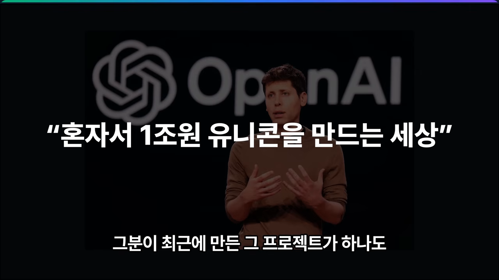
가능해 보이지만, 화자는 조심스러워요
화자가 이 말을 진지하게 받아들인 계기는 OpenAI 쪽이 아니라 OpenClaw였어요. 만든 사람인 피터 스타인버거가 코드를 한 줄도 직접 쓰지 않고, 읽지도 않은 채 GitHub에 배포했다고 해요. 에이전트만으로 만든 프로젝트가 오픈소스에서 크게 유행하는 시대가 된 거예요.
그래도 화자는 이 방식에 꽤 부정적이에요. 웹·앱 개발자로서 보안을 중요하게 보는데, 실제로 OpenClaw에는 보안 취약점 때문에 Pull Request와 버그 바운티가 쏟아지고 있어요. 나중에 기능을 넓히거나 고치려면 사람이 코드를 보고 이해할 수 있어야 한다는 게 화자의 입장이에요.
1조 원은 숫자로 따져 봐야 해요
화자는 1조 원이라는 숫자를 냉정하게 계산해 보라고 해요. 한 사람에게 만 원씩 팔면 얼마가 남는지, 거기에 PER(Price-to-Earnings Ratio)을 20, 30, 50으로 매기면 이익이 최소 얼마여야 하는지를 따져 보라는 거예요. 영상은 결과를 말하지 않았지만, 나누기만 해 보면 감이 와요.
그래서 화자도 다섯 명이 '가능성'을 보여 줄 뿐이라고 선을 그어요. 개별적으로 수백억 원을 번 사람은 있지만, 1조 원 가치까지 갔는지는 의문이라고 해요. 읽는 사람이 직접 판단해 보라는 게 이 영상의 태도예요.
에릭 바론: 4년 반을 혼자 버틴 Stardew Valley
첫 번째는 게임이에요. 화자는 요즘 게임 쪽이 뜨겁고, 한국에서도 한두 명이 수십억 원 매출을 내는 게임 회사가 나오고 있다고 해요. 서양에서 가장 큰 사례가 Stardew Valley를 만든 에릭 바론(Eric Barone)이에요.
슬라이드 왼쪽에 숫자 두 개가 굵게 표시돼 있어요. 혼자 작업한 기간 '4년 반'과 판매량 '4,100만 장'이에요. 오른쪽은 Stardew Valley의 농장 화면이에요.
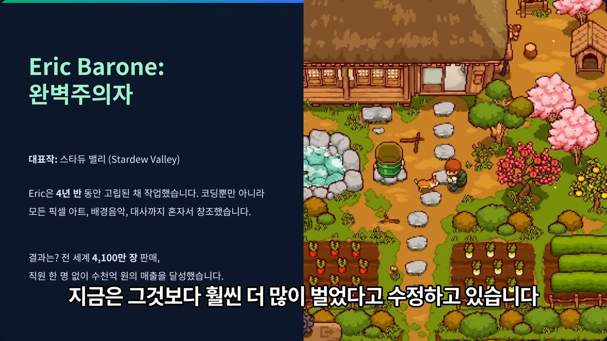
화자 말로는 29살에 최소 400억 원을 벌었고, 지금은 그보다 훨씬 많다고 해요. 거꾸로 계산하면 20대 초중반에 시작한 셈이에요. 개발하는 4년 동안 다른 사람과 거의 대화도 못 할 만큼 외로웠다고 해요.
취업은 떨어졌지만 제품은 성공했어요
눈에 띄는 대목은 이력이에요. 프로그래머로 이력서를 계속 냈지만 번번이 떨어졌다고 해요. 작은 실패를 겪으면서도 게임 사이드 프로젝트를 꾸준히 이어 갔고, 그게 결국 대표작이 됐어요.
다음 슬라이드는 교훈을 카드 세 장으로 나눠요. 가운데 카드가 특히 이 사람다워요. 픽셀 아트도 작곡도 몰랐지만, 프로젝트에 필요해서 처음부터 배웠다는 내용이에요.
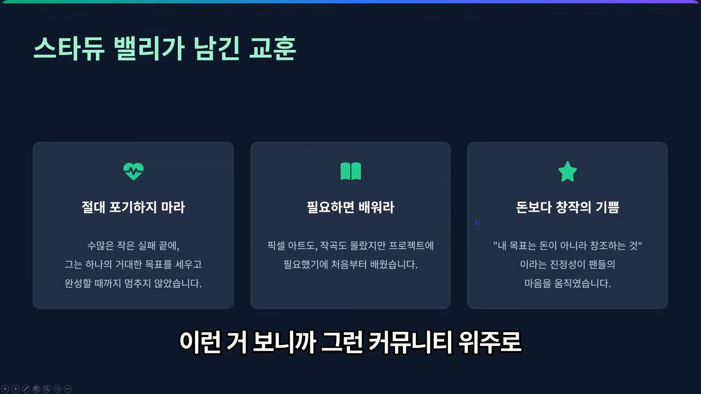
화자는 요즘 인터뷰를 보면 그가 커뮤니티를 중심으로 활동하면서 '내가 만든 게임을 내놓고 싶다'는 마음으로 만들었다고 전해요. 그리고 AI가 있는 지금도 혼자 게임을 만드는 건 쉽지 않다고 덧붙여요. 아트, 음악, 스토리 라인까지 혼자 골방에서 4년을 버틴 대가라는 거예요.
피터 스타인버거: 에이전트로 만든 OpenClaw
두 번째는 영상 첫머리에서 언급한 피터 스타인버거(Peter Steinberger)예요. 슬라이드는 그의 이력을 카드 두 장으로 나눠요. 왼쪽이 예전 회사, 오른쪽이 지금의 OpenClaw예요.
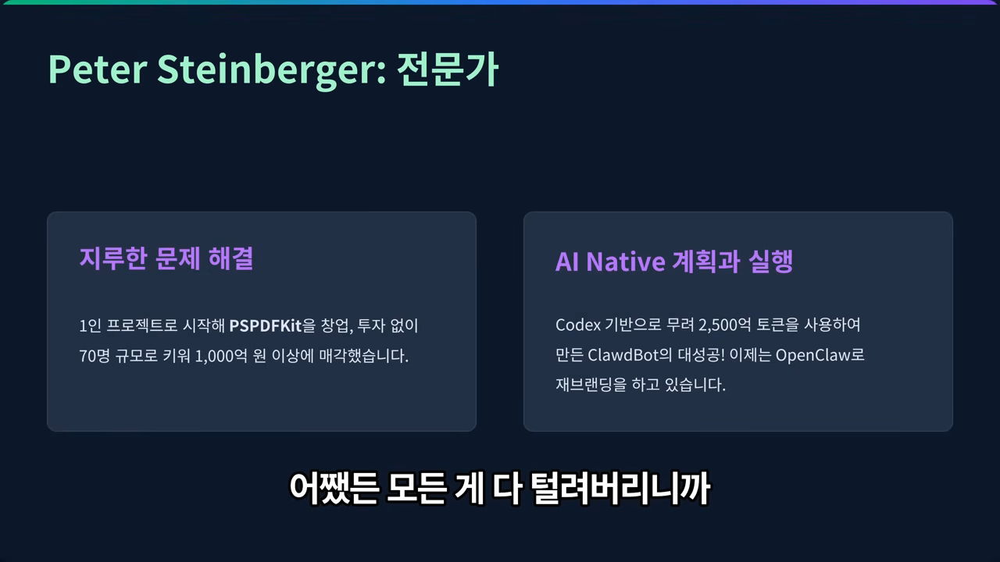
처음 이름은 Clawdbot이었고 지금은 OpenClaw로 브랜딩을 다시 하고 있어요. 화자 말로는 대성공이라 해도 후원금으로는 Mac mini 한 대도 못 산다고 해요. 그래도 AI 업계를 뒤집어 놓을 만한 프로젝트가 됐고, 혼자 운영할 규모를 넘어서 다른 사람들을 점점 끌어들이는 중이에요.
이제는 기획자도 직접 만드는 시대
화자는 이런 사례를 보며 아이디어가 있는 기획자나 디자이너가 소프트웨어를 직접 만들어야 하는 시대가 됐다고 느꼈어요. 화자 자신도 학점이 좋지 않았고, Java로 앱만 만들던 사람이라 서버나 통신, 게임은 잘 몰랐다고 해요. 그런데 이제 그런 부분은 LLM이 써 주니, 키워드 몇 개와 구조, 소프트웨어 아키텍처 몇 가지만 공부하면 구현은 무리가 없겠다는 거예요.
단, 모든 건 보안이 지켜진다는 전제예요. 한 군데만 뚫려도 API(Application Programming Interface) 키가 털리고, 로그인한 사용자에게 남의 데이터가 보이는 사고가 나요. 보안은 기본이고, 그 위에서 LLM으로 경제적 성공도 충분히 가능하다는 게 화자의 생각이에요.
성공 전략 네 가지
다음 슬라이드는 전략을 네 줄로 적어요. 첫 줄의 '지루한 문제' 이야기가 앞의 PSPDFKit과 이어져요. PDF(Portable Document Format) 렌더링처럼 남들이 꺼리는 문제를 먼저 풀러 갔다는 거예요.
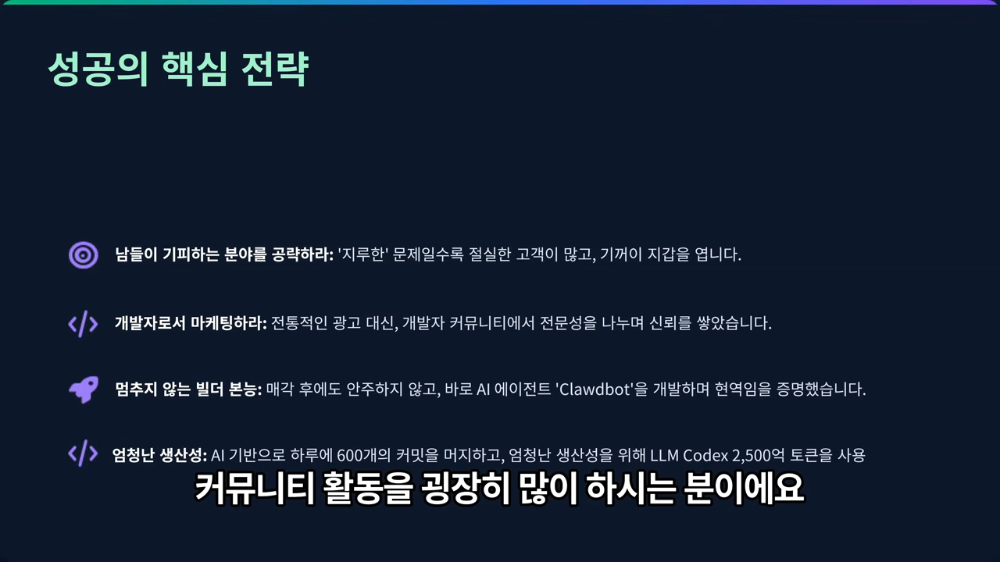
- 개발자로서 마케팅하라 — 광고도 중요하지만, 유튜브나 블로그에 만드는 과정을 계속 공개하고 '이 기능은 좋다, 이건 없었으면 좋겠다' 같은 피드백을 받아 녹이는 쪽이에요. GitHub 잔디가 빽빽할 만큼 커뮤니티 활동이 많은 사람이에요.
- 멈추지 않는 빌더 본능 — 회사를 팔고 현업을 떠났지만, 에이전트가 발달하자 'LLM으로 에이전트 오케스트레이션을 하나 만들어 볼까' 하고 다시 시작했어요.
- 엄청난 생산성 — AI로 하루 600개 커밋을 충돌 없이 머지했어요. 화자 추정으로는 토큰 값만 7~8천만 원, 1억 원 가까이 태웠어요.
화자는 그만한 돈을 쓸 수 있는 건 지갑이 두둑해서라고 짚어요. 화자 자신은 GLM(General Language Model) 4.7 모델로 Ruby on Rails 코딩을 하는데, 훨씬 싸다고 해요. 싼 모델로라도 소프트웨어를 계속 찍어 낼 수 있으면 시장에서 검증을 이어 갈 수 있다는 거예요.
GitHub 스타 12만, 그리고 LLM 경쟁
화자는 녹화 한두 시간 전에 캡처한 GitHub 화면을 보여 줘요. 오른쪽 Star History 그래프를 보면 선이 바닥에 붙어 있다가 Jan 25 근처에서 거의 수직으로 솟아요. 세로축 끝이 120K예요.
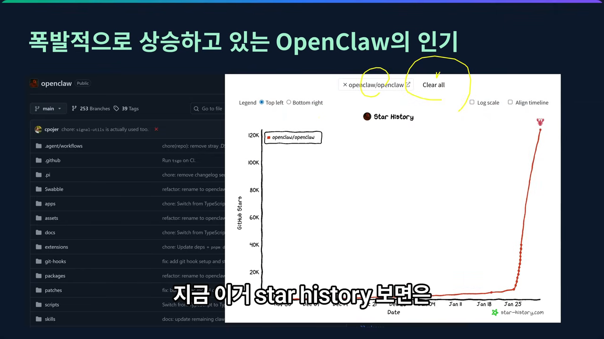
화자는 갑작스러운 성공이 꼭 부럽지만은 않다고 해요. 온갖 잔소리가 쏟아져 본인도 얼떨떨해한다는 거예요. 그래도 OpenClaw 덕에 Mac mini가 많이 팔릴 만큼, 미래의 AI 비서가 어떤 모양일지 보여 줬다고 평가해요.
화자가 더 크게 본 건 LLM 회사들의 경쟁이에요. OpenClaw를 설치해 보면 온갖 에이전트와 온갖 LLM을 붙일 수 있게 돼 있어요. 좋은 LLM일수록 많은 도구 중 맞는 걸 골라 툴 콜링을 제대로 하니, 사람들은 컨텍스트 윈도우가 크고 성능과 코드 벤치마크가 좋은 모델을 찾아가요.
그래서 화자는 앞으로 에이전트 기반으로 개발하겠다고 마무리해요. 어떤 LLM이 나오더라도 바로 바꿔 끼울 수 있는 프로젝트를 만들어 두는 게 남는 장사라는 판단이에요.
Jonas Tyroller: 양이 질을 만든다
세 번째는 요나스 티롤러(Jonas Tyroller)예요. 화자는 그를 광고 이야기로 소개해요. Kingshot이라는 게임이 그의 게임을 베낀 광고를 돌렸는데, 그 덕에 오히려 원작자가 더 유명해졌다는 거예요. 그 원작이 Thronefall이에요. 왕 하나가 맵을 돌아다니며 마을을 지키는 게임이에요.
슬라이드의 소제목은 '성공을 위한 100번의 시도'예요. 아래 단락에 Thronefall이 단 두 명이서 만들어 1년 만에 100만 장 이상 팔렸다고 적혀 있어요.
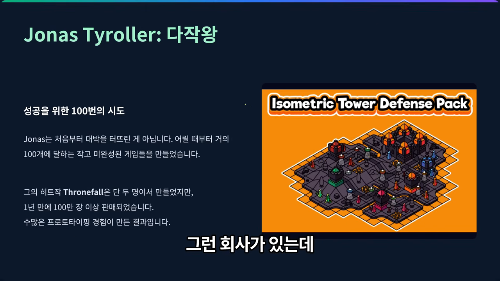
화자는 이 정도 완성도가 나온 이유를 수많은 프로토타이핑 경험에서 찾아요. 크고 작은 게임을 워낙 많이 만들어 봤기 때문이라는 거예요. 엔진은 Unity를 썼어요.
프로젝트를 통째로 열어 보여 줬어요
그는 유튜브 인터뷰에서 Unity 프로젝트 전체를 공개했어요. 화면 가운데가 개발자 시점에서 바깥에서 내려다본 맵이고, 실제 게임에서는 이 안에서 훨씬 작게 보여요. 아래 영어 자막에는 클래스 이름은 대문자로 시작하고 변수 이름도 전부 같은 규칙을 따른다는 설명이 나와요.
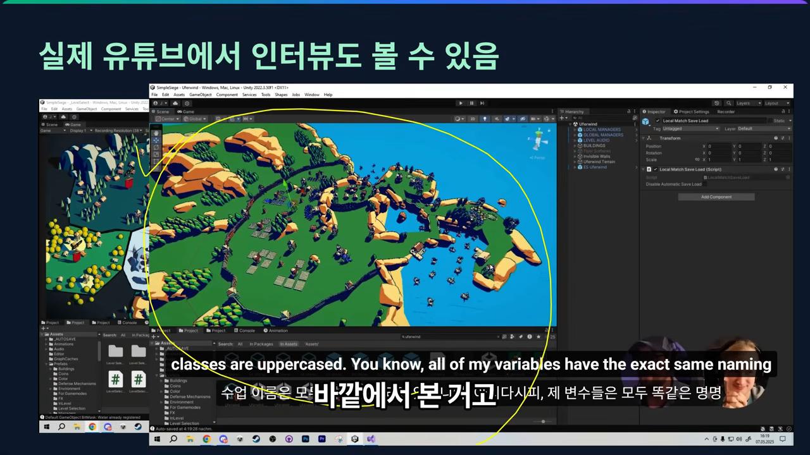
양이 질을 만든다
이 사람을 대표하는 문장이 슬라이드에 인용돼 있어요. 가운데 세 줄 중 둘째 줄 숫자 '100개'가 핵심이에요.
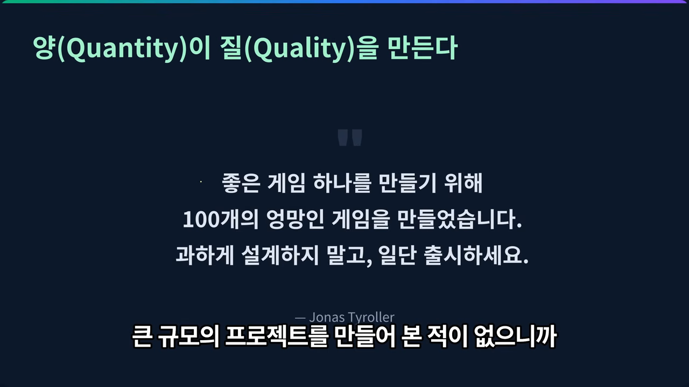
화자는 이걸 갓 졸업한 개발자에게 빗대요. 큰 프로젝트를 해 본 적이 없으니 처음부터 좋은 소프트웨어를 만들 수는 없어요. 대신 작은 걸 여러 개 만들고, 그 과정에서 익힌 코드와 재미 요소를 하나의 제품으로 합쳐 가라는 거예요.
'과하게 설계하지 말고 일단 출시하라'는 말에는 화자도 같은 생각이에요. 최소 기능만 갖춘 MVP(Minimum Viable Product)를 시장에 던지는 건 이미 정석이에요. 화자는 그 정석을 더 빨리 돌리려면 이제 LLM이 꼭 필요하다고 덧붙여요.
피터 레벨스: 공개하고, 단순하게
네 번째는 인디 해커라면 모를 수 없다고 화자가 말하는 피터 레벨스(Pieter Levels)예요. 슬라이드 오른쪽 단락이 그의 이력을 세 줄로 요약해요.
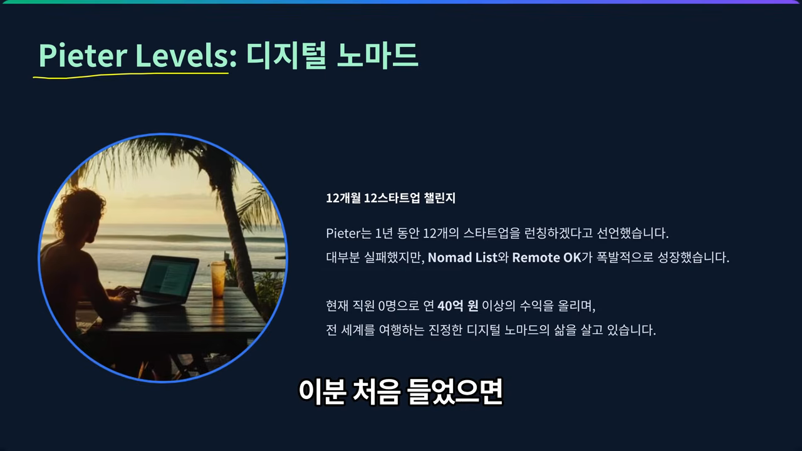
Nomad List와 Remote OK
Nomad List는 노트북 하나 들고 여러 나라를 옮겨 다니며 일하는 디지털 노마드를 위한 사이트예요. 화자가 띄운 사이트 화면에는 Bangkok, Chiang Mai 같은 도시 카드가 한 달 생활비와 함께 줄지어 있어요. 일종의 노마드 커뮤니티이고, 안에서 광고를 받아 수익을 내요.
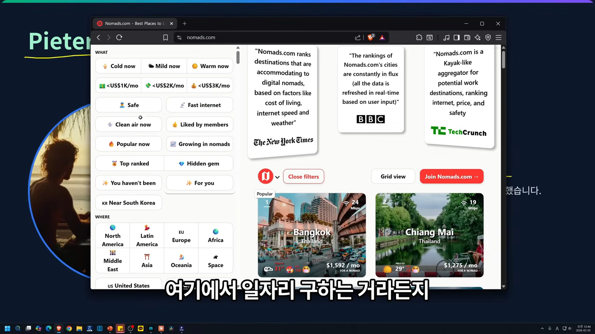
Remote OK는 원격 근무 일자리를 찾는 채용 사이트예요. 화면 위쪽 버튼이 'Post a remote job'인 것처럼, 다른 회사가 채용 공고를 올릴 때마다 돈을 받아요. 결제는 Stripe API로 받아요.
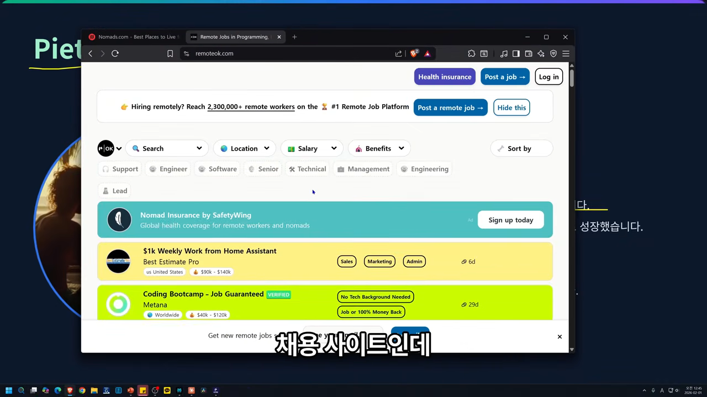
화자는 한국은 Stripe를 쓸 수 없다고 짚어요. 그럴 때는 Lemon Squeezy처럼 Stripe를 감싼 서비스로 우회해 결제를 받을 수 있다고 소개해요. 레벨스는 지금 직원 없이 연 40억 원 이상을 벌면서 세계를 여행하고 있어요.
인디 해커의 방식 세 가지
다음 슬라이드는 큰 숫자 '12'(1년간 런칭 횟수) 옆에 방식 세 가지를 적어요. 첫 줄 Build in Public에 화자가 밑줄을 그었어요.
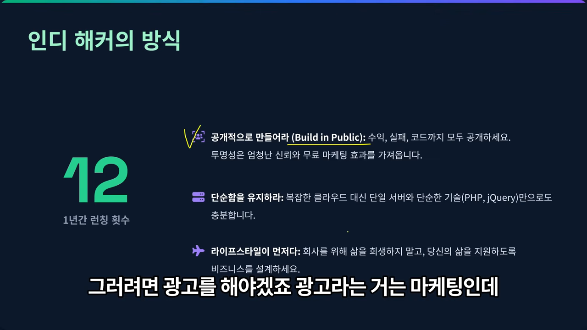
공개적으로 만들어라. 레벨스는 뭘 만들면 무조건 Reddit에 올려 관심을 끌고, 트위터에도 계속 올려요. 소프트웨어는 누군가 써야 돈이 되고, 그러려면 알려야 해요. 돈을 주고 광고하는 것보다 필요한 사람이 모인 곳에 던지는 게 낫다는 거예요. Reddit은 한국의 디시인사이드 갤러리처럼 주제별 서브레딧이 있어서 거기에 바로 던질 수 있어요. 수익, 실패, 코드까지 다 공개하는 투명성이 공짜 마케팅이 됐어요.
단순함을 유지하라. 복잡한 클라우드 대신 단일 서버, 그리고 PHP(PHP: Hypertext Preprocessor)와 jQuery면 충분하다는 원칙이에요. 화자가 가장 공감하는 대목이에요. 화자가 Next.js, Supabase, Vercel 조합을 좋아하지 않는 이유도 같아요. 중요한 건 빠른 개발 자체가 아니라, 단순한 기술로 제품을 계속 찍어 낼 수 있는 스택이라는 거예요.
화자는 React를 예로 들어요. 처음엔 클래스 컴포넌트뿐이었고 생명주기 메서드로 다 계산했는데, 그 뒤 함수 컴포넌트와 훅, 서버 컴포넌트, 앱 라우터가 차례로 나왔어요. 그걸 계속 배우면서 제품을 만들 수는 없겠다 싶어서 Ruby on Rails를 골랐다고 해요.
'언제 적 PHP냐'는 말도 있지만, 현실에서 PHP는 여전히 많이 쓰여요. 화자가 대표로 띄운 게 WordPress예요.
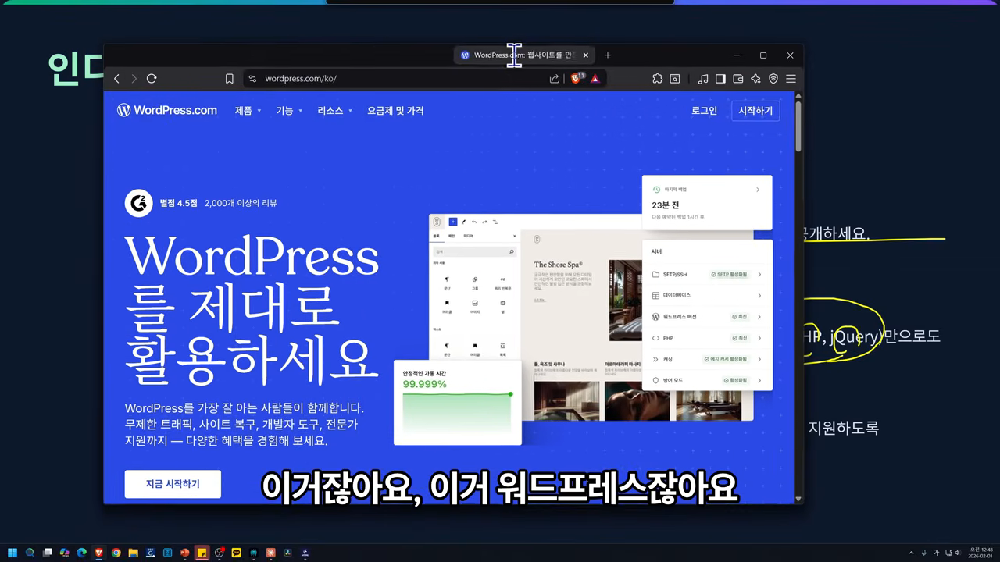
라이프스타일이 먼저다. 회사를 위해 삶을 희생하지 말고, 삶을 지원하도록 비즈니스를 설계하라는 원칙이에요. 화자는 당연한 이야기라며 짧게 넘어가요.
DHH: 관습을 따르면 기능에 집중할 수 있어요
마지막은 화자가 앞에서 여러 번 언급한 Ruby on Rails를 만든 데이비드 하이네마이어 한슨(David Heinemeier Hansson)이에요. 영상에서는 DHH라고 불러요. 슬라이드 왼쪽 첫 줄이 업적, 그 아래가 그가 지지하는 방향이에요.
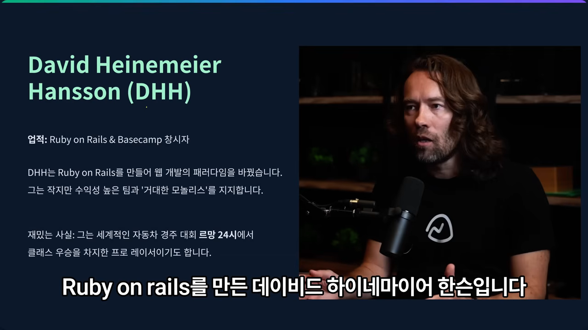
창업하려고 만든 프레임워크
DHH는 Basecamp라는 회사를 만들기 위해 Rails를 만들었어요. 창업이 목적이었고 프레임워크는 수단이었던 셈이에요. Rails는 MVC(Model-View-Controller) 구조로 프로토타입을 아주 빨리 만들 수 있어서 2000년대에 큰 붐을 일으켰고, 화자는 그 영향으로 MVC 패턴이 크게 유행했다고 봐요.
그 뒤 Rails는 밀렸어요. 대표적인 원인이 React와 Node.js예요. 웹 개발을 하려면 어차피 JavaScript를 알아야 하는데 백엔드까지 JavaScript로 할 수 있으니 다들 넘어갔고, Node.js가 웹 개발 시장을 거의 가져갔어요.
그래도 Rails 커뮤니티는 남아 있고, 캐나다 상장사 Shopify가 지금도 Rails를 써요. 화자는 여기서 기준 하나를 제시해요. Facebook이 미는 React와 React Native, Shopify가 미는 Rails처럼 큰 기업이 밀어주는 기술은 쉽게 사라지지 않아요. 웹 프레임워크를 고를 때 그런 걸 고르면 충분히 안정적이라는 거예요.
행복을 위해 최적화하라
다음 슬라이드는 DHH의 철학을 카드 세 장으로 정리해요. 가운데 카드의 숫자 '100명 미만'과 오른쪽 카드의 '관습'이 화자가 짚는 부분이에요.
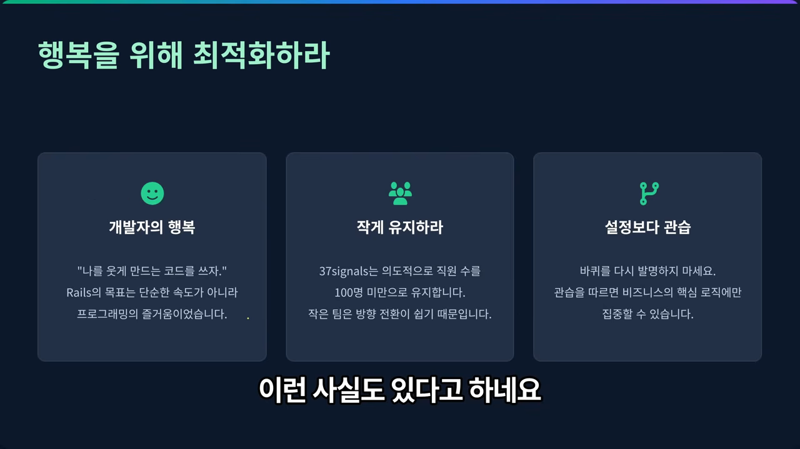
- 개발자의 행복 — Ruby는 개발자의 행복을 위한 언어로 유명해요. 문법이 단순하고, 코드가 문장처럼 흘러가요.
- 작게 유지하라 — 아주 적은 인원으로 소프트웨어를 유지하고 있어요. 화자는 아마존 창업자 제프 베이조스가 이 회사 주식을 사 갔다는 일화도 소개해요. 회사를 판 게 아니라 지분 일부를 넘긴 것이고, 그걸로 크게 부자가 됐다고 해요.
- 설정보다 관습 — 관습을 따르면 비즈니스 핵심 로직에만 집중할 수 있어요.
화자는 관습 이야기를 자기 방식으로 풀어요. 모듈명, 변수명, 클래스명을 다 마음대로 짓는 것도 좋지만, 주어진 대로 짜는 게 기능을 찍어 내는 데는 가장 빠를 수 있다는 거예요. 돈 버는 소프트웨어는 기능 구현이 먼저고, UI(User Interface)·UX(User Experience)와 기능을 남보다 빨리 내놓아야 해요. 그러니 일단 관습대로 찍어 내고, 원하는 스택으로는 나중에 바꿔도 된다는 게 화자의 의견이에요.
화자가 정리한 다섯 가지 법칙
화자는 다섯 명을 본 뒤 '1인 개발 성공의 다섯 가지 법칙'을 정리해요. 법칙이라기보다 자기 생각을 적은 거라고 미리 말해 둬요. 슬라이드의 다섯 줄이 각각 앞의 인물들과 이어져요. 넷째 줄 '끈기'에는 Stardew Valley가 직접 적혀 있어요.
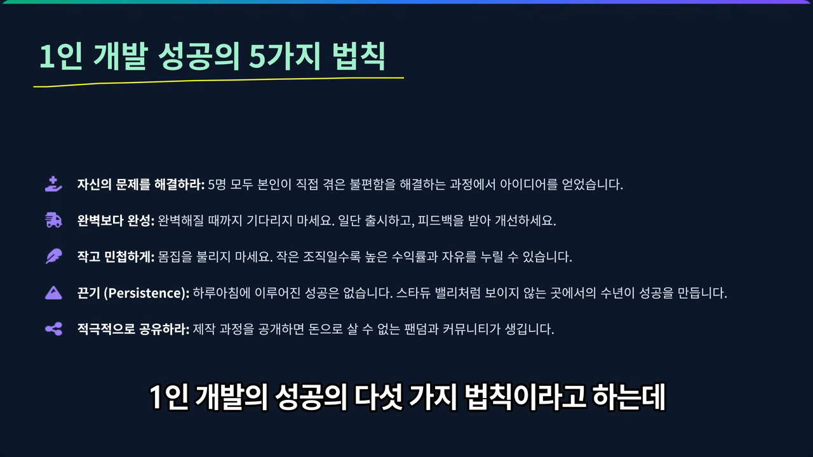
슬라이드 글씨가 작아서, 각 법칙과 화자가 말로 덧붙인 내용을 표로 옮겼어요.
| 법칙 | 슬라이드 설명 | 화자가 덧붙인 말 |
|---|---|---|
| 자신의 문제를 해결하라 | 5명 모두 직접 겪은 불편함에서 아이디어를 얻었어요 | LLM 창을 열고 이미지를 넣어 'OCR 해 줘'라고 하는 게 늘 불편했어요. 끌어다 놓으면 바로 텍스트를 뱉는 앱도 하나의 제품이 돼요 |
| 완벽보다 완성 | 완벽해질 때까지 기다리지 말고 일단 출시하고 피드백으로 고쳐요 | 이제 완벽하게 만드는 건 의미가 없다고 봐요 |
| 작고 민첩하게 | 몸집을 불리지 마세요. 작은 조직일수록 수익률과 자유가 높아요 | 니치 마켓을 뾰족하게 파고들어 매출을 낸 뒤 넓혀요. 작게 투자해 큰 수익률을 노리는 방식이에요 |
| 끈기 | 하루아침에 이뤄진 성공은 없어요. Stardew Valley처럼 보이지 않는 수년이 성공을 만들어요 | 최소 반년은 개발해야 한다고 봐요 |
| 적극적으로 공유하라 | 제작 과정을 공개하면 돈으로 살 수 없는 팬덤과 커뮤니티가 생겨요 | 화자가 유튜브를 하는 이유도 만든 제품을 보여 주고 피드백을 받기 위해서예요 |
'완성'은 얼마만큼일까요
완성과 끈기는 서로 부딪치는 것처럼 들려요. 화자는 둘을 시간으로 나눠 설명해요. 1~2주면 MVP는 나오지만, 그 정도는 이제 프롬프트 한두 개로도 만들어요. 그러니 그걸 완성이라 부르긴 어렵다는 거예요.
화자가 생각하는 완성은 이래요. 웹사이트라면 굵직한 기능이 세 개쯤 있고, 자체 데이터베이스를 유지하고, 그걸 관리할 관리자 페이지까지 있어야 해요. 완벽이 아니라 완성의 영역이에요. 4년 반이 걸린 Stardew Valley는 게임이라 예외로 두고, 앱이나 웹이라면 1년이면 한 달에 하나씩도 낼 수 있다고 봐요.
다섯 명을 한 표로
영상에 나온 숫자와 키워드만 모아 보면 공통점이 보여요. 팀은 모두 0~2명 또는 작게 유지했고, 각자 오래 쌓은 무언가가 있었어요.
| 인물 | 대표작 | 팀 | 영상이 든 성과 | 영상이 꼽은 핵심 |
|---|---|---|---|---|
| 에릭 바론 | Stardew Valley | 혼자 | 4,100만 장, 수천억 원 매출 | 4년 반의 끈기, 필요하면 배우기 |
| 피터 스타인버거 | PSPDFKit, OpenClaw | PSPDFKit 70명, OpenClaw 혼자 시작 | PSPDFKit 1,000억 원 이상 매각, GitHub 스타 12만 | 지루한 문제, 하루 600커밋의 AI 생산성 |
| Jonas Tyroller | Thronefall | 두 명 | 1년 만에 100만 장 이상 | 엉망인 게임 100개, 일단 출시 |
| 피터 레벨스 | Nomad List, Remote OK | 직원 0명 | 연 40억 원 이상 | 1년 12개 런칭, Build in Public, 단순한 기술 |
| DHH | Ruby on Rails, Basecamp | 100명 미만 유지 | 웹 개발 패러다임 전환 | 개발자의 행복, 설정보다 관습 |
당신의 여정을 시작하세요
마지막 화면은 문구 하나와 짧은 두 줄이에요. 거창한 투자도 팀도 필요 없으니 지금 바로 시작하라는 내용이에요.
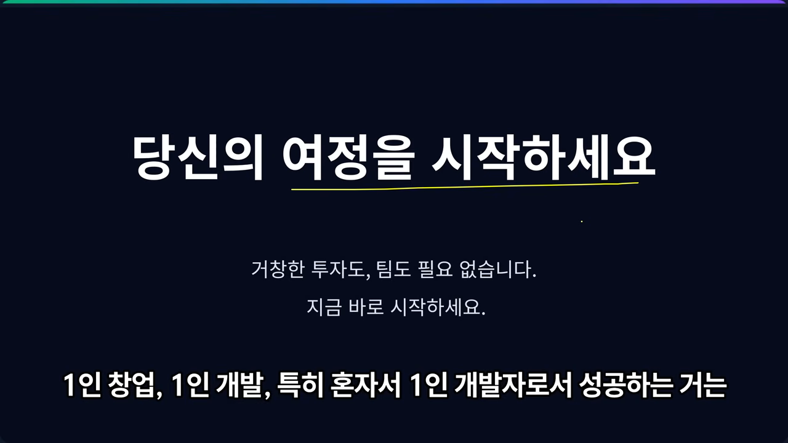
화자의 마무리는 담백해요. 소프트웨어에 관심이 있다면 죽기 전에 앱 하나, 웹사이트 하나쯤은 시장에 내놓고 싸워 봐야 후회가 없다는 거예요. 화자 주변에도 비전공자로 JavaScript를 독학해 크게 성공한 사람이 있다고 하고, 그런 사람들을 인터뷰해 1인 개발자 커뮤니티를 만들고 싶다고 해요.